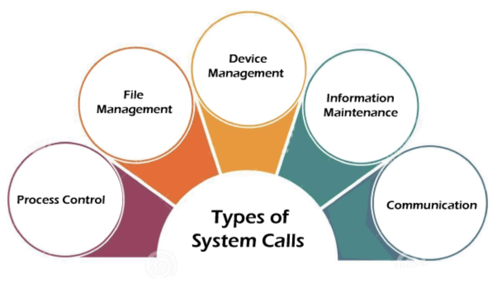
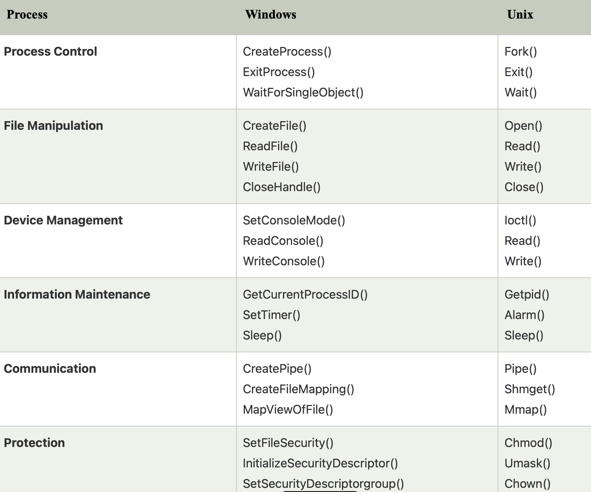

Introduction of System Call
In computing, a system call is a programmatic way in which a computer program requests a service from the kernel of the operating system it is executed on. A system call is a way for programs to interact with the operating system. A computer program makes a system call when it makes a request to the operating system’s kernel. System call provides the services of the operating system to the user programs via Application Program Interface (API). It provides an interface between a process and an operating system to allow user-level processes to request services of the operating system. System calls are the only entry points into the kernel system. All programs needing resources must use system calls.
A system call is a mechanism used by programs to request services from the operating system (OS). In simpler terms, it is a way for a program to interact with the underlying system, such as accessing hardware resources or performing privileged operations.
A system call is initiated by the program executing a specific instruction, which triggers a switch to kernel mode, allowing the program to request a service from the OS. The OS then handles the request, performs the necessary operations, and returns the result back to the program.
System calls are essential for the proper functioning of an operating system, as they provide a standardized way for programs to access system resources. Without system calls, each program would need to implement its own methods for accessing hardware and system services, leading to inconsistent and error-prone behavior.
Services Provided by System Calls:
Features of System Calls:
System calls provide several advantages to programs and the operating system, including:
How are system calls made?
When a computer software needs to access the operating system's kernel, it makes a system call. The system call uses an API to expose the operating system's services to user programs. It is the only method to access the kernel system. All programs or processes that require resources for execution must use system calls, as they serve as an interface between the operating system and user programs.
Below are some examples of how a system call varies from a user function:
Why do you need system calls in Operating System?
There are various situations where you must require system calls in the operating system. Some of the situations include:
How System Calls Work
The applications run in an area of memory known as user space. A system call connects to the operating system's kernel, which executes in kernel space. When an application makes a system call, it must first obtain permission from the kernel. It achieves this using an interrupt request, which pauses the current process and transfers control to the kernel.
If the request is permitted, the kernel performs the requested action, such as creating or deleting a file. The application receives the kernel's output as input. The application resumes the procedure after receiving the input. When the operation is finished, the kernel returns the results to the application and then moves data from kernel space to user space in memory.
A simple system call may take a few nanoseconds to provide the result, like retrieving the system date and time. A more complicated system call, such as connecting to a network device, may take a few seconds. Most operating systems launch a distinct kernel thread for each system call to avoid bottlenecks. Modern operating systems are multi-threaded, which means they can handle various system calls at the same time.
System calls can be categorized into different types based on their functionality:
Process control system calls are used to direct processes. Examples of process control system calls include creating, loading, aborting, ending, executing, and terminating processes.
File management system calls are used to handle files. Examples of file management system calls include creating files, deleting files, opening, closing, reading, and writing files.
Device management system calls are used to deal with devices. Examples of device management system calls include reading from devices, writing to devices, getting device attributes, and releasing devices.
Information maintenance system calls are used to maintain information. Examples of information maintenance system calls include getting system data, setting time or date, getting time or date, and setting system data.
Communication system calls are used for communication. Examples of communication system calls include creating and deleting communication connections, sending and receiving messages, etc.
open()
The open() system call allows you to access a file on a file system. It allocates resources to the file and provides a handle that the process may refer to. Many processes can open a file at once or by a single process only. It all depends on the file system and structure.
read()
It is used to obtain data from a file on the file system. It accepts three arguments in general:
The file descriptor of the file to be read could be used to identify it and open it using open() before reading.
wait()
In some systems, a process may have to wait for another process to complete its execution before proceeding. When a parent process creates a child process, the parent process execution is suspended until the child process is finished. The wait() system call is used to suspend the parent process. Once the child process has completed its execution, control is returned to the parent process.
write()
It is used to write data from a user buffer to a device like a file. This system call is one way for a program to generate data. It takes three arguments in general:
The file descriptor of the file to be written could be used to identify it and open it using open() before writing.
These are just a few examples of system calls. There are many more system calls available, each serving a specific purpose and providing an interface for programs to interact with the operating system.
By utilizing system calls, programs can harness the power of the underlying operating system, access hardware resources, manage processes, ensure security, and perform various essential operations that contribute to the overall functionality of an operating system.
Overall, system calls are essential for the proper functioning of an operating system and provide a powerful mechanism for programs to interact with the underlying system in a controlled and secure manner.